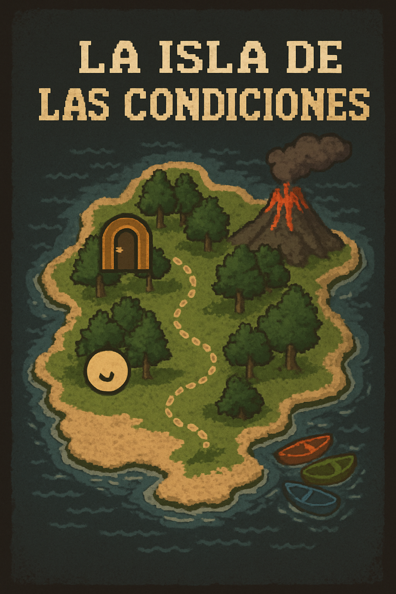

¡Resuelve los acertijos para escapar de la isla!
Estás atrapado en una isla misteriosa. Para escapar, deberás resolver acertijos usando condicionales en Python. Cada desafío desbloqueará una parte del mapa.
Un condicional en Python permite ejecutar ciertas instrucciones solo si se cumple una condición:
if edad >= 18:
print("Eres mayor de edad")
elif edad >= 13:
print("Eres adolescente")
else:
print("Eres niño/a")
Mirá el video explicativo a continuación:
¡Completá los acertijos y desbloqueá tu escape!